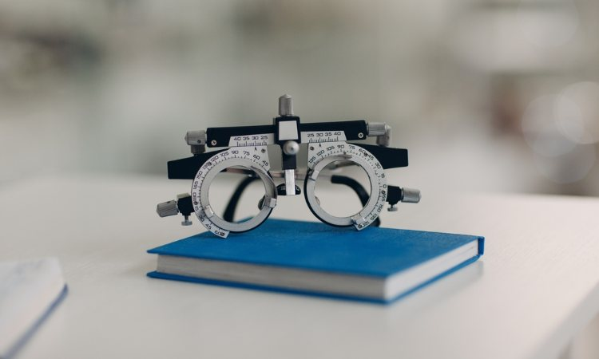
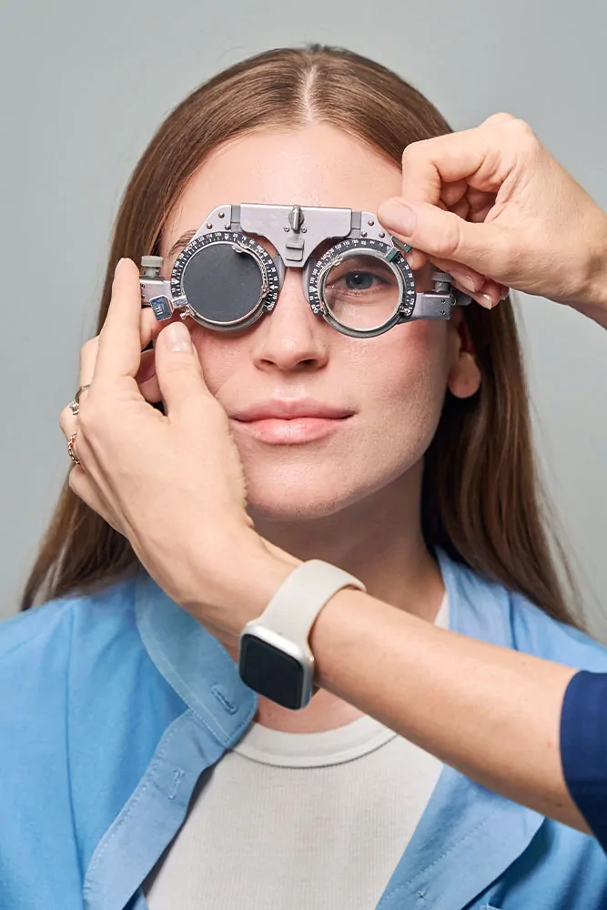
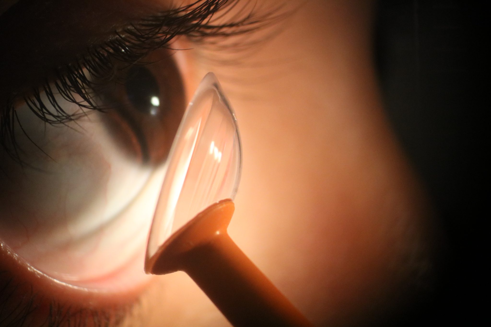
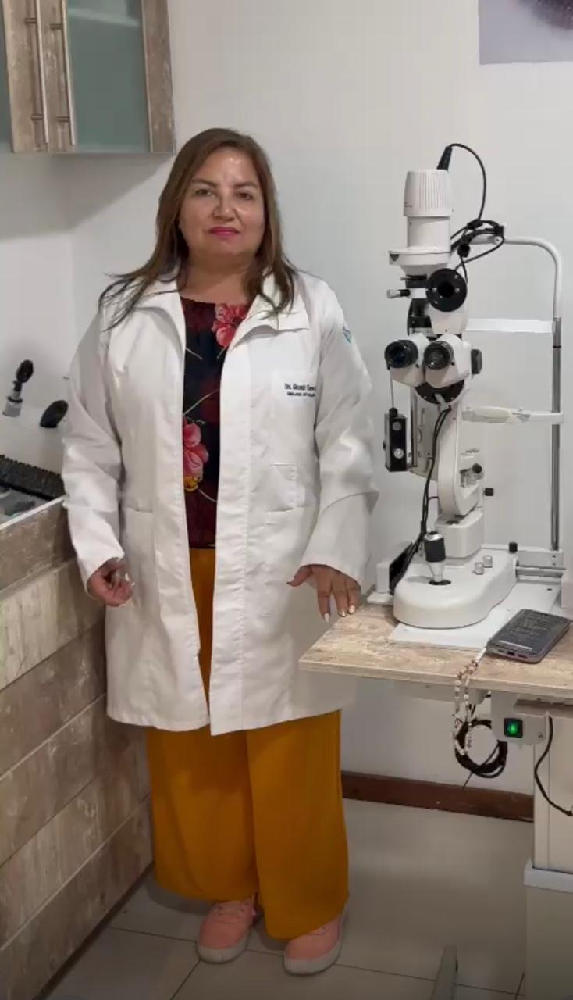
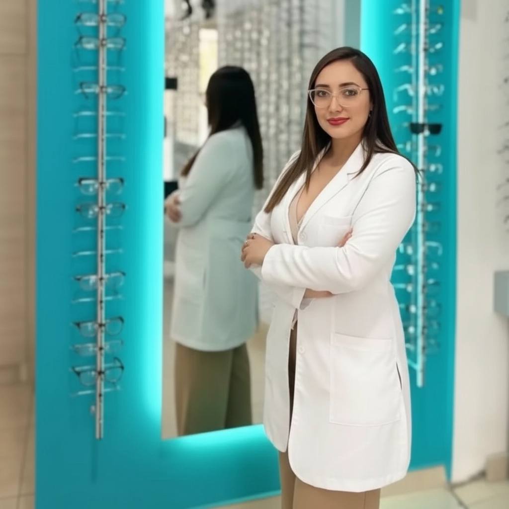

BIENVENIDOS AL CENTRO OFTALMOLÓGICO - ÓPTICA TORRES
Profesionales en óptica y atención visual personalizada
¿Por qué elegir Óptica Torres?
- Especialistas con experiencia: Equipo de oftalmólogos y optómetras con formación continua y atención humana personalizada.
- Tecnología de punta: Diagnóstico preciso con equipos modernos y lentes de primeras marcas.
- Atención personalizada: Planes de tratamiento individualizados y seguimiento postventa para mejores resultados.
- Comodidad y accesibilidad: Horarios amplios, ubicaciones céntricas y opciones de pago sencillas.
- Garantía y confianza: Garantía en lentes y asesoría profesional en cada visita.
Evaluación visual completa
Exámenes diagnósticos precisos (OCT, tonometría, topografía) para detectar y tratar a tiempo, con diagnóstico claro y plan personalizado.
Lentes y tecnología de primera
Lentes de primeras marcas y soluciones avanzadas (progresivos, antirreflejo, filtros) con control de calidad y garantía.
Atención cercana y seguimiento
Citas ágiles, recordatorios, asesoría postventa y controles programados para asegurar tu satisfacción y salud visual.

Sobre nosotros
Óptica Torres es un centro oftalmológico en Av. Colón que combina tecnología de punta con atención humana. Nuestro equipo de oftalmólogos y optómetras realiza diagnósticos precisos y planes de tratamiento personalizados para cada paciente. Ofrecemos lentes de primeras marcas, seguimiento postventa y citas ágiles.
-
Exámenes avanzados
OCT, tonometría, topografía y pruebas especializadas para un diagnóstico preciso y un plan de tratamiento individualizado.
-
Tratamientos y procedimientos
Procedimientos médicos y opciones de corrección adaptadas a cada caso, incluyendo intervenciones y seguimiento clínico cuando procede.
-
Seguimiento y garantía
Control postoperatorio, ajustes y garantía en lentes y procedimientos; acompañamiento hasta la recuperación y satisfacción del paciente.
Estadísticas
Especialistas
Sucursales
Servicios
Atención integral para la salud visual: diagnóstico, corrección, seguimiento y urgencias.
Examen visual completo
Evaluación de agudeza visual, refracción y pruebas funcionales para un diagnóstico preciso y plan personalizado.
Diagnóstico por imagen
OCT, topografía corneal, retinografía y otras pruebas que permiten detección temprana de patologías.
Lentes y monturas
Asesoría en monturas y suministro de lentes oftálmicas (progresivos, antirreflejo, fotocromáticos) con garantía.
Lentes de contacto
Adaptación personalizada, controles y suministro de lentes blandos, rígidos y especializados.
Terapia visual y pediatría
Tratamientos para ambliopía, estrabismo y programas de rehabilitación visual para niños y adultos.
Cirugía y seguimiento
Valoración preoperatoria, derivación cuando corresponde y seguimiento postoperatorio para procedimientos oftalmológicos.
Departamentos
Áreas de especialidad para diagnóstico y tratamiento integral de la salud visual.
Optometría
Evaluación funcional de la visión y adaptación de lentes.
Exámenes refractivos, control de la acomodación, adaptación de lentes de contacto y programas de terapia visual para mejorar el rendimiento visual.

Retina
Diagnóstico y manejo de enfermedades de retina.
Atención de retinopatía diabética, degeneración macular, desprendimiento de retina y seguimiento con OCT y retinografía.

Córnea y superficie ocular
Tratamiento de enfermedades corneales y sequedad ocular.
Topografía corneal, manejo de queratitis, trasplantes superficiales y terapias para ojo seco.

Cirugía refractiva
Opciones quirúrgicas para reducir dependencia de lentes.
Evaluación preoperatoria para LASIK, PRK y otras técnicas, con seguimiento postoperatorio y manejo de complicaciones.
Pediatría y estrabismo
Atención oftalmológica pediátrica y tratamiento de desalineaciones visuales.
Detección temprana de ambliopía, manejo del estrabismo, terapias visuales y coordinación con equipos quirúrgicos cuando es necesario.

Especialistas
Necessitatibus eius consequatur ex aliquid fuga eum quidem sint consectetur velit
Gioconda Torres
Cirujana OftalmólogaCirujana oftalmóloga — especializada en retina y cirugía refractiva.

Patricia Torres
OptómetraOptómetra — adaptación de lentes y terapia visual.

Pamela Guerrero
OptómetraOptómetra — controles, asesoría y seguimiento postventa.
Galería
Imágenes de nuestras instalaciones y trabajos.


Óptica Torres - Sucursal Av. Colón
Contáctanos para consultas y citas en nuestra sucursal de Av. Colón
Ubicación
Av. Cristobal Colón y Antonio de Ulloa, Edificio Fierro, Quito 170520
Llámanos
Correo
contacto@opticatorres.med.ec